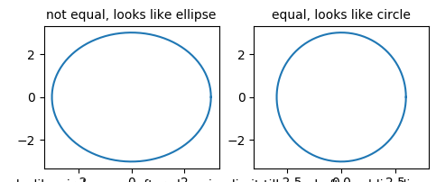

Pca
- Similarly, if your scree plot is like this, you can have 2D graph to represent 4D data: Figure

- What about this one Figure? Can you use 2D graph to represent 4D? Why?

SVM—More than two classes
- I forgot to mention this in our last class…
- One-Versus-One Classification:
- Suppose that we would like to perform classification using SVMs, and there are K > 2 classes. A one-versus-one or all-pairs approach constructs K(K − 1)/2 SVMs, each of which compares a pair of classes.
- One-Versus-All Classification
SVM—facial recognition
- Only two students have watched the video… So let’s briefly walk through the code.
- Whitening: preprocessing step. The goal of whitening is to make the input less redundant; more formally. This can help to make (i) the features less correlated with each other, and (ii) the features all have close variance.
- Also, something about HW4. If you find the three methods have similar results…
PCA Sample Code
- axis(‘equal’) changes limits of x or y axis so that equal increments of x and y have the same length; a circle is circular.
- axis(‘scaled’) achieves the same result by changing the dimensions of the plot box instead of the axis data limits.

PCA Handwriting Digit
- Two possible ways to do dimensionality reduction:
- Method 1: Choose from 64 features, only select 8 important cells (features). Similar to: you are required to select n letters (a, b, c…) from alphabet table to write an article
- Method 2: PCA, create 8 principle components. Each component contains some information of 64 features. Similar to: you are required to select n words from frequently used words table to write an article.
- Np.cumsum: return the cumulative sum of the elements along a given axis.
- Filtering noise:
- The principle component with large amount of information (higher variation) will not be affected by noise.
- Np.random.normal: generate noise data based on normal distribution.
Group Activity 8: PCA

Figure 3 Group Activity 3D data representation
- PCA can improve machine learning model performance. Even without reduce dimensionality.
- Why the performance is improved? Figure
- Still the 3D data.
Homework 5: Group Homework
- Work on the jupyter notebook at: https://github.com/ruiwu1990/CSCI_4120/blob/master/SVM/HW5.ipynb
- You are required to classify digits with SVM models.
- Compare performance of linear, radial, and polynomial kernels (classification score).
- Tune kernel parameters using RandomizedSearchCV method.
- Use PCA to reduce data dimensionality (80% information remain).
- README.MD file
- Team member names and email addresses
- Parameters selected for linear, radial, polynomial kernels.
- Results comparison between linear, radial, polynomial kernels
- Due…
Plan
- 6 classes:
- 2 classes: Tree-based methods
- 2 classes: genetic algorithm
- 1 class: group activity, process a data file together
- 1 class: review
| Index | Prev |